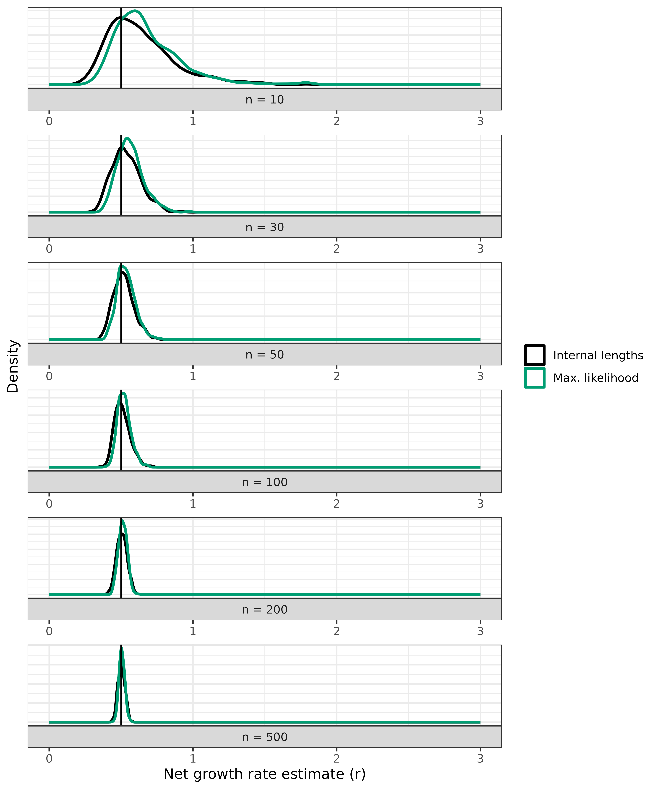
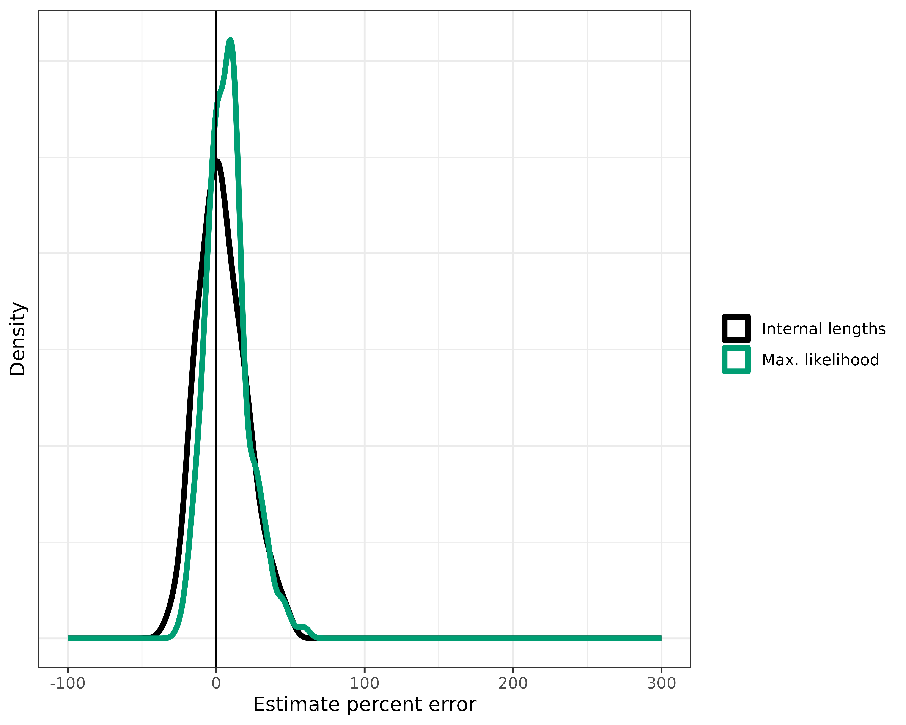

Reproduce simulation results
Source:vignettes/articles/reproduce-simResults.Rmd
reproduce-simResults.RmdNOTE: Still need to add/install Phylofit for comparison. Simulation numbers need to be increased to match what we’ve done in our preprint. This is a work in progress at the moment.
In this article, we’ll reproduce the simulations we include in our
recent preprint. We’ll skip over many of the basics, as those are
detailed in our introductory simulation article/vignette which is
available in vignette("cloneRate-simulate"). The simulation
procedure for generating birth-death trees is a direct implementation of
results by Amaury Lambert in a recent paper.
These results allowed us to simulate thousands of trees to check our
methods for growth rate estimation from phylogenetic tree
reconstruction, which is detailed in our
recent preprint. We’ll reproduce this validation here.
Setup
First, we’ll have to load the packages we want to use. We’ll be
plotting the trees using the ape package function
ape::plot.phylo()
along with some other ape functions. If you have
cloneRate installed, you already have the ape package. We’ll
also be using ggplot2 to make
our plots, which can be installed from CRAN as shown below:
# Load and attach our package cloneRate
library(cloneRate)
# Load and attach ape, which will be installed if you've installed cloneRate
library(ape)
# Install ggplot2 if necessary, then load and attach it with library()
if (!requireNamespace("ggplot2")) {
install.packages("ggplot2")
}
library(ggplot2)For applying Phylofit, which was developed by Nicholas Williams and applied in Williams et al. and Mitchell et al., see Emily Mitchell’s github: https://github.com/emily-mitchell/normal_haematopoiesis/blob/main/1_functions/farm_only/phylofit.R
We’ll also set the color palette which we’ll use for most of the plotting. The palette is taken from here
colorPal <- c("#000000", "#E69F00", "#56B4E9", "#009E73", "#F0E442", "#0072B2", "#D55E00", "#CC79A7")Varying parameters
So far, we’ve looked at the same parameters. Now, we’ll see what happens when we change some important parameters about the birth-death process.
Varying n
One of the most interesting results to explore further is how the
accuracy of the estimates depends on the number of samples. For this,
we’ll look at a few different n parameter values. To keep
things from running for too long, we can re-use our trees from
n=100 and add 150 more trees at different n
values. For this, let’s show how to run simUltra() with a
vector input for n. First, we’ll generate the vector, which
we’ll call n_vec. Let’s explore a small n
value, 10, and an intermediate n value, 30.
For now, we’ll keep the growth rate a - b equal to 1,
but again we’ll let the actual birth and death rates vary.
a_vec <- stats::runif(n = 300, min = 1, max = 4)
b_vec <- a_vec - 1In total, our n_vec is of length 300. So we’ll want to
make sure a_vec and b_vec are also of length
300. And we’ll have to set nTrees = 300. If we generate
multiple trees, we either set a single value for the parameters, or a
vector of length nTrees. This applies to both
simUltra() and simMut(). Let’s generate some
more trees. Note: this will also take a few minutes.
Now, let’s apply our estimates and combine the data.frames:
# Apply our estimates for ultrametric trees
n10_n30_maxLike <- maxLikelihood(n10_n30_trees)
n10_n30_lengths <- internalLengths(n10_n30_trees)
# Combine the estimates
n10_n30_both <- rbind(n10_n30_maxLike, n10_n30_lengths)Add text here
#
results_vary_n <- rbind(n10_n30_both)Let’s make a plot for each of these, showing the performance. We’ll
use ggplot2::facet_wrap() in order to show the same plot at
various n values. Although we have a different number of
trees from the n = 100 case, the density plot will
normalize this.
ggplot(results_vary_n) +
geom_density(aes(x = estimate, color = method), linewidth = 1.5) +
geom_vline(xintercept = exampleUltraTrees[[1]]$metadata$r) +
theme_bw() +
theme(
axis.text.y = element_blank(), axis.ticks.y = element_blank(),
legend.title = element_blank()
) +
xlim(0, 3) +
xlab("Net growth rate estimate (r)") +
ylab("Density") +
scale_color_manual(
labels = c("Internal lengths", "Max. likelihood"),
values = c("black", "#009E73")
) +
facet_wrap(~ factor(paste0("n = ", n), levels = c("n = 10", "n = 30")),
ncol = 1, strip.position = "bottom", scales = "free", dir = "v"
)
#> Warning: Removed 2 rows containing non-finite values (`stat_density()`).
As you can see, both estimates are highly dependent on the number of
samples. If you’d like to see the same density values on the y-axis for
all three n values, set scales = "fixed" in
the facet_wrap() function.
If you’re interested, you can apply the same quantitative measures to this data as we did before in [Quantitative comparisons]. We won’t repeat that here, but we show this in Figure 2 of our preprint. This information is also available in the Supplementary tables, which are also available as .csv files.
Varying r (and/or cloneAge)
As we noted before, we can simulate many trees at once using
simUltra() and simMut(). Here, we’ll use
simUltra() to generate 100 trees at various growth rates.
We do a similar analysis in Figures 3 and 4 of our
preprint, noting that our methods struggle with small growth rates.
Let’s see if we come to the same conclusion here.
Varying r or cloneAge?
First, we have to address something that might otherwise lead to
confusion; varying r is the same as varying
cloneAge. When you think about it, it makes sense. If I
simulate a population with a net growth rate of 1 per year for 20 years
it should look the same as a growth rate of 0.5 per year for 40 years.
We’ll show this, but first consider the fact that the units are
meaningless, so long as they’re consistent. So a growth rate of 1/12 and
a clone age of 20*12 is exactly the same as a growth rate of 1 and 20 if
the units change from a years to months.
This all might be a bit confusing, so let’s plot it. First, we’ll simulate a tree with a growth rate of 2 for 30 years and compare it to a tree with a growth rate of 0.5 and the same 30 years. These trees should look different. Finally, we’ll add a tree that has a growth rate of 0.5, but run it for 120 years. If what I said above is true, we should see that the last tree looks like the first tree, because 0.5 for 120 should be the same as 2 for 30. Let’s find out:
# First tree, r = a - b = 2
tree1 <- simUltra(a = 2.5, b = .5, cloneAge = 30, n = 50)
# Second tree, with r = a - b = 0.5
tree2 <- simUltra(a = 1, b = .5, cloneAge = 30, n = 50)
# Third tree, with r = 0.5 but cloneAge = 120
tree3 <- simUltra(a = 1, b = .5, cloneAge = 120, n = 50)Now, let’s plot using par() to show all three in one
plot
par(mfrow = c(1, 3))
ape::plot.phylo(tree1, direction = "downwards", show.tip.label = F, main = "r = 2, cloneAge = 30")
ape::plot.phylo(tree2, direction = "downwards", show.tip.label = F, main = "r = 0.5, cloneAge = 30")
ape::plot.phylo(tree3, direction = "downwards", show.tip.label = F, main = "r = 0.5, cloneAge = 120")
While the trees on the left and the right aren’t identical due to the stochastic nature of the birth-death process, they are similar, and certainly different from the tree in the middle.
Performance across r values
Now we can arbitrarily choose whether to vary r or
cloneAge. For consistency, we’ll vary r, as we
do in Figures 3 and 4 of our
preprint. Here, we have two options:
- Simulate at fixed
rvalues, showing which are good and which are problematic - Simulate at random
rvalues and then try to decipher which estimates are good and which aren’t
Option 1 is essentially the same as we did in Varying n, but with r instead of
n, so repeating that here wouldn’t be as useful. Option 2
is also more realistic…we can pretend we don’t know the ground truth and
show how we decide if our methods are relevant before comparing to the
ground truth.
Let’s simulate 200 trees with 50 samples and various growth rates, ranging from 0.1 to 1 per year, run for 40 years.
# Uniform ditribution of r used to generate b_vec
r_vec <- stats::runif(n = 200, min = 0.1, max = 1)
a_vec <- stats::runif(n = 200, min = 1, max = 3)
b_vec <- a_vec - r_vec
# Input to simUltra()
vary_r_trees <- simUltra(a = a_vec, b = b_vec, cloneAge = 40, n = 50, nTrees = length(a_vec))Apply our maxLikelihood() function as usual…
maxLike_vary_r <- maxLikelihood(vary_r_trees)
#> Warning in FUN(X[[i]], ...): External to internal lengths ratio is less than or equal to 3,
#> which means max. likelihood method may not be applicable. Consider
#> using birthDeathMCMC() function, which avoids this issue.
#> Warning in FUN(X[[i]], ...): External to internal lengths ratio is less than or equal to 3,
#> which means max. likelihood method may not be applicable. Consider
#> using birthDeathMCMC() function, which avoids this issue.
#> Warning in FUN(X[[i]], ...): External to internal lengths ratio is less than or equal to 3,
#> which means max. likelihood method may not be applicable. Consider
#> using birthDeathMCMC() function, which avoids this issue.
#> Warning in FUN(X[[i]], ...): External to internal lengths ratio is less than or equal to 3,
#> which means max. likelihood method may not be applicable. Consider
#> using birthDeathMCMC() function, which avoids this issue.
#> Warning in FUN(X[[i]], ...): External to internal lengths ratio is less than or equal to 3,
#> which means max. likelihood method may not be applicable. Consider
#> using birthDeathMCMC() function, which avoids this issue.
#> Warning in FUN(X[[i]], ...): External to internal lengths ratio is less than or equal to 3,
#> which means max. likelihood method may not be applicable. Consider
#> using birthDeathMCMC() function, which avoids this issue.
#> Warning in FUN(X[[i]], ...): External to internal lengths ratio is less than or equal to 3,
#> which means max. likelihood method may not be applicable. Consider
#> using birthDeathMCMC() function, which avoids this issue.
#> Warning in FUN(X[[i]], ...): External to internal lengths ratio is less than or equal to 3,
#> which means max. likelihood method may not be applicable. Consider
#> using birthDeathMCMC() function, which avoids this issue.
#> Warning in FUN(X[[i]], ...): External to internal lengths ratio is less than or equal to 3,
#> which means max. likelihood method may not be applicable. Consider
#> using birthDeathMCMC() function, which avoids this issue.
#> Warning in FUN(X[[i]], ...): External to internal lengths ratio is less than or equal to 3,
#> which means max. likelihood method may not be applicable. Consider
#> using birthDeathMCMC() function, which avoids this issue.
#> Warning in FUN(X[[i]], ...): External to internal lengths ratio is less than or equal to 3,
#> which means max. likelihood method may not be applicable. Consider
#> using birthDeathMCMC() function, which avoids this issue.
#> Warning in FUN(X[[i]], ...): External to internal lengths ratio is less than or equal to 3,
#> which means max. likelihood method may not be applicable. Consider
#> using birthDeathMCMC() function, which avoids this issue.
#> Warning in FUN(X[[i]], ...): External to internal lengths ratio is less than or equal to 3,
#> which means max. likelihood method may not be applicable. Consider
#> using birthDeathMCMC() function, which avoids this issue.
#> Warning in FUN(X[[i]], ...): External to internal lengths ratio is less than or equal to 3,
#> which means max. likelihood method may not be applicable. Consider
#> using birthDeathMCMC() function, which avoids this issue.
#> Warning in FUN(X[[i]], ...): External to internal lengths ratio is less than or equal to 3,
#> which means max. likelihood method may not be applicable. Consider
#> using birthDeathMCMC() function, which avoids this issue.
#> Warning in FUN(X[[i]], ...): External to internal lengths ratio is less than or equal to 3,
#> which means max. likelihood method may not be applicable. Consider
#> using birthDeathMCMC() function, which avoids this issue.
#> Warning in FUN(X[[i]], ...): External to internal lengths ratio is less than or equal to 3,
#> which means max. likelihood method may not be applicable. Consider
#> using birthDeathMCMC() function, which avoids this issue.
#> Warning in FUN(X[[i]], ...): External to internal lengths ratio is less than or equal to 3,
#> which means max. likelihood method may not be applicable. Consider
#> using birthDeathMCMC() function, which avoids this issue.
#> Warning in FUN(X[[i]], ...): External to internal lengths ratio is less than or equal to 3,
#> which means max. likelihood method may not be applicable. Consider
#> using birthDeathMCMC() function, which avoids this issue.
#> Warning in FUN(X[[i]], ...): External to internal lengths ratio is less than or equal to 3,
#> which means max. likelihood method may not be applicable. Consider
#> using birthDeathMCMC() function, which avoids this issue.
#> Warning in FUN(X[[i]], ...): External to internal lengths ratio is less than or equal to 3,
#> which means max. likelihood method may not be applicable. Consider
#> using birthDeathMCMC() function, which avoids this issue.Uh oh… that’s a long list of warnings. Let’s read through and see what’s going on. The ratio of external to internal lengths is a measure of how “supercritical” or star-shaped the birth-death process is. If the internal lengths are at the top of the tree, we consider it star-shaped, and it’s a good candidate for our methods, which operate under the assumption of a supercritical process. This means that the growth rate is high enough, and enough time has passed, for the coalescence events to occur well before the sampling time. In practice, using these simulations, we show that an external to internal lengths ratio greater than 3 is good enough to apply our methods. Let’s apply our methods and see how they look before and after applying this ratio cutoff. Note that this is what we’re doing in Figure 4 of our preprint.
Let’s apply the internal lengths method, this time suppressing the warning.
lengths_vary_r <- suppressWarnings(internalLengths(vary_r_trees))Because we have different r values, we can’t do a
density plot as before. We’ll have to show a density plot with the x
axis representing percent error. In this case, good estimates will
consolidate around 0. First, we’ll calculate error using the
estimate column and r_vec which has our ground
truth values.
# Calculate error in lengths, adding columns
lengths_vary_r$ground_truth <- r_vec
lengths_vary_r$percent_error <- 100 * (lengths_vary_r$estimate - lengths_vary_r$ground_truth) / lengths_vary_r$ground_truth
# Do the same for maxLike
maxLike_vary_r$ground_truth <- r_vec
maxLike_vary_r$percent_error <- 100 * (maxLike_vary_r$estimate - maxLike_vary_r$ground_truth) / maxLike_vary_r$ground_truth
# Combine for ggplot formatting
results_vary_r <- rbind(lengths_vary_r, maxLike_vary_r)
# Plot, adding a vertical line at 0 because that's the error free estimate
ggplot(results_vary_r) +
geom_density(aes(x = percent_error, color = method), linewidth = 1.5) +
geom_vline(xintercept = 0) +
theme_bw() +
xlim(-100, 300) +
theme(
axis.text.y = element_blank(), axis.ticks.y = element_blank(),
legend.title = element_blank()
) +
xlab("Estimate percent error") +
ylab("Density") +
scale_color_manual(labels = c("Internal lengths", "Max. likelihood"), values = c("black", "#009E73"))
#> Warning: Removed 2 rows containing non-finite values (`stat_density()`).
Not bad, but we have some rogue estimates with > 200% error! And we have many with > 50% error. Let’s apply that cutoff ratio of 3 to exclude the trees which we don’t think are good candidates for our methods. Hopefully, this will get rid of the very poor estimates.
# Cut those trees with ratio > 3
results_vary_r_cut <- results_vary_r[results_vary_r$extIntRatio >= 3, ]
# How many did we cut
print((nrow(results_vary_r) - nrow(results_vary_r_cut)) / 2)
#> [1] 21
# Plot, adding a vertical line at 0 because that's the error free estimate
ggplot(results_vary_r_cut) +
geom_density(aes(x = percent_error, color = method), linewidth = 1.5) +
geom_vline(xintercept = 0) +
theme_bw() +
xlim(-100, 300) +
theme(
axis.text.y = element_blank(), axis.ticks.y = element_blank(),
legend.title = element_blank()
) +
xlab("Estimate percent error") +
ylab("Density") +
scale_color_manual(labels = c("Internal lengths", "Max. likelihood"), values = c("black", "#009E73"))
I’d say that’s much better. We cut 24 of the 200 trees, eliminating many of the worst estimates. The real advantage here is that we can look at a tree calculate this ratio which will tell us right away if our methods are applicable. Again, if you’re interested in the quantitative side of this, you can apply the metrics from the [Quantitative comparisons] section.
References
The method for simulating the trees is a direct result of the work of Amaury Lambert in the following paper. The mathematical methods for estimating growth rates build in large part from the same work, linked below:
And here’s a final link to our paper for more of the details of the methods and data analysis.
There aren’t too many colors in this vignette, but we tried to use colorblind friendly colors, specifically pulling colors from a palette designed by Bang Wong and available here.